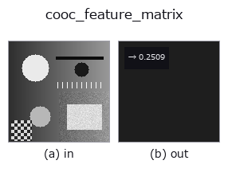

texture op• Data kinds: image → feature
• Call: fullseye.apply(img, "cooc_feature_matrix", a=0.5, b=0.5) (2-D model = एक image + दो scalar knobs a,b∈[0,1])
• HALCON समकक्ष: cooc_feature_matrix (अर्थ और parameters समझने के लिए HALCON reference उपयोगी है)

*Figure synthetic 128×128 input पर सच में चलाकर मिला output है। बाईं ओर input, दाईं ओर output। Point clouds ऊपर से देखे गए scatter के रूप में (brightness = z), 1-D series line के रूप में, volumes z दिशा में maximum-intensity projection के रूप में, videos बीच के frame के रूप में, complex images amplitude के रूप में, और जो return values चित्र नहीं बन सकते वे स्वयं values के रूप में दिखाए जाते हैं।*
Knob a को बदलकर (0.1 / 0.5 / 0.9, दूसरा knob default पर):
▸ cooc_feature_matrix: knob a को बदलने का figure (docs site)
Knob b को बदलकर (0.1 / 0.5 / 0.9, दूसरा knob default पर):
▸ cooc_feature_matrix: knob b को बदलने का figure (docs site)
Gray-level co-occurrence matrix (GLCM, skimage.feature.graycomatrix, 16 tones में quantise, दूरी 1+3*a, कोण 0°) से Haralick texture feature energy (angular second moment, matrix के मानों का केंद्रण = texture की एकरूपता) की गणना करता है। HALCON के cooc_feature_matrix (Calculate gray value features from a co-occurrence matrix.) के समकक्ष है (HALCON कई features और कई कोण एक साथ लौटा सकता है, लेकिन यहाँ energy और कोण 0° तय करके सरल किया गया है)।
a उस pixel दूरी को 1-4 की सीमा में बदलता है जिस पर co-occurrence लिया जाता है। ★b >= 0.75 पर यह 0/45/90/135 degree की 4 दिशाओं का औसत लेता है (default b=0.5 पहले की तरह केवल 0 degree का उपयोग करता है, इसलिए मौजूदा परिणाम 1 bit भी नहीं बदलते)।
असली textures (brick / grass / gravel) को घुमाकर मापने पर (poc_real_texture_invariance का खंड 6) पता चलता है कि यह काम करता है या नहीं, यह दूरी a पर निर्भर है:
• पहले, a बढ़ाने पर materials के बीच का resolution ही ढह जाता है (0.0328 -> 0.0122, घटकर 1/2.7)। anisotropic brick का उतार-चढ़ाव resolution के 0.30 -> 3.13 गुना तक फैल जाता है।
• 4 दिशाओं का औसत isotropic materials के लिए छोटी और मध्यम दूरी पर काम करता है (grass 0.23 -> 0.12, gravel 0.20 -> 0.11)।
• anisotropic brick के लिए यह केवल दूरी 4 पर काम करता है (3.13 -> 1.54), और दूरी 1 पर उल्टा बिगाड़ देता है (0.30 -> 0.56)।
• दूरी 4 तक पहुँचने पर isotropic grass में भी सुधार नहीं होता (0.17 -> 0.19) -- resolution ढह जाने के बाद औसत लेकर भी उसे वापस नहीं पाया जा सकता।
लंबी दूरी पर उपयोग करते समय, औसत लगाने से पहले जाँच लें कि materials अभी भी अलग पहचाने जा रहे हैं या नहीं। साथ ही, "गलत पहचान की संख्या" से मापने पर यह प्रक्रिया (interpolation का order, crop करने का तरीका, कोण का step) के प्रति संवेदनशील होता है; अनुपात (उतार-चढ़ाव / resolution) अधिक स्थिर है।
• gallery2d_texture_freq family guide
• Sample data catalog (DL URL / license) — 2-D के लिए skimage.data (BSD/public) + synthetic, 3-D के लिए real data sources (Stanford/PDS आदि) के DL URL।
• Operators का स्रोत और संदर्भ — इस op family के मूल research/methods के स्रोत।
• Algorithm का मानक स्रोत (लेखक, वर्ष) और उपयोग ऊपर की family usage guide में दिए गए हैं।
नीचे का program सच में चलता है, यह जाँचा गया है (figure वाला ही input)। Studio की help में यह block buttons बन जाता है, जिनसे इसे वहीं load करके चलाया जा सकता है।
cooc_feature_matrix 0.50 0.50
▸ यह pipeline load करें · Load करके चलाएँ
• gallery2d_texture_freq — py -3.11 examples/gallery2d_texture_freq.py
• poc_real_texture_invariance — py -3.11 examples/poc_real_texture_invariance.py
feature को input के रूप में लेते हैं)texture)std_filter · local_bimodality · local_std · scale_select_std · bootstrap_std_error · structure_tensor_orientation · structure_tensor_coherence · gabor
*Provenance: ops.py — 2D operator registry. यह per-op note tools/opdocs.py md से अपने-आप generate होता है (हाथ से edit न करें)।*
© 2026 Kazufumi Furuse — Fullseye operator documentation. Licensed under Apache-2.0.